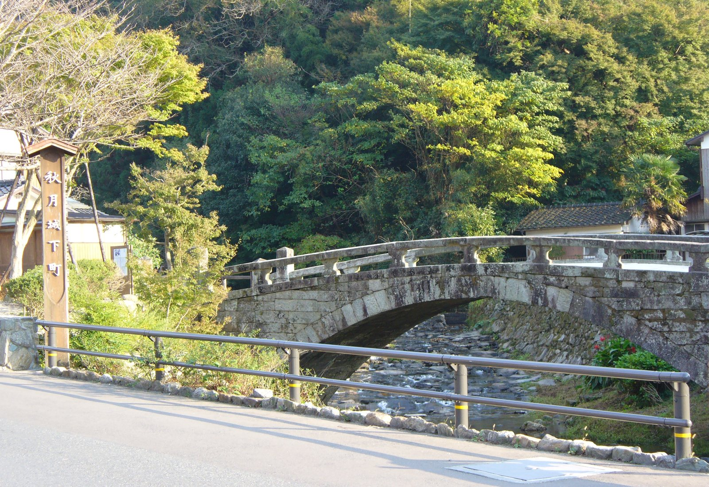
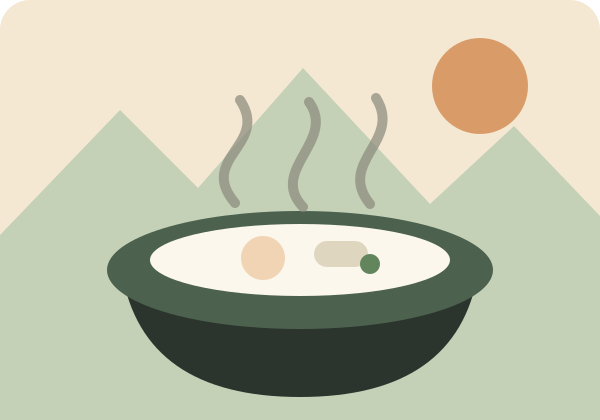
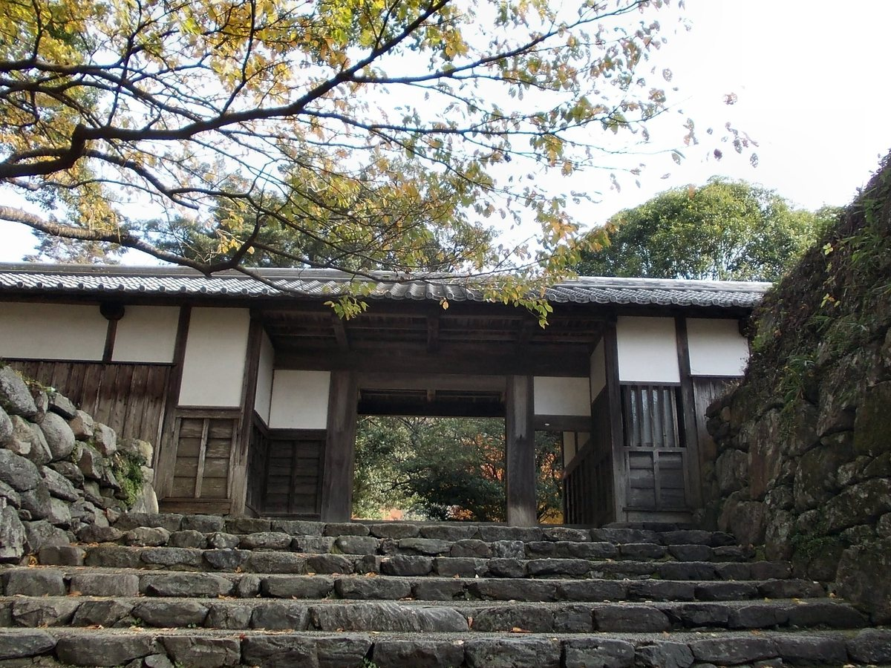
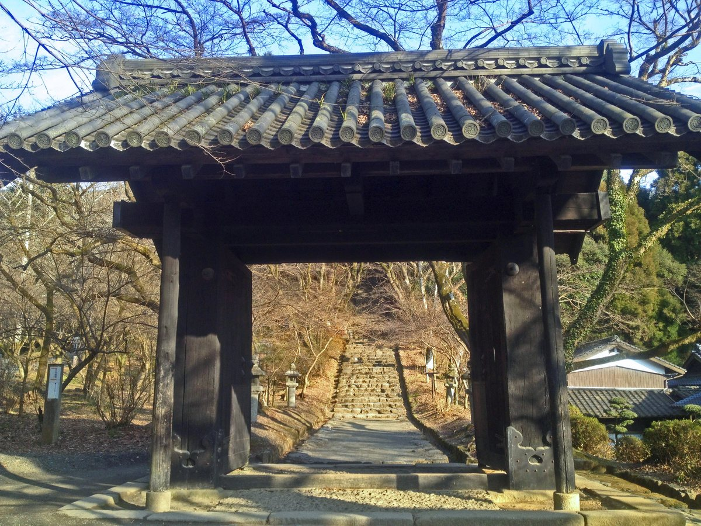
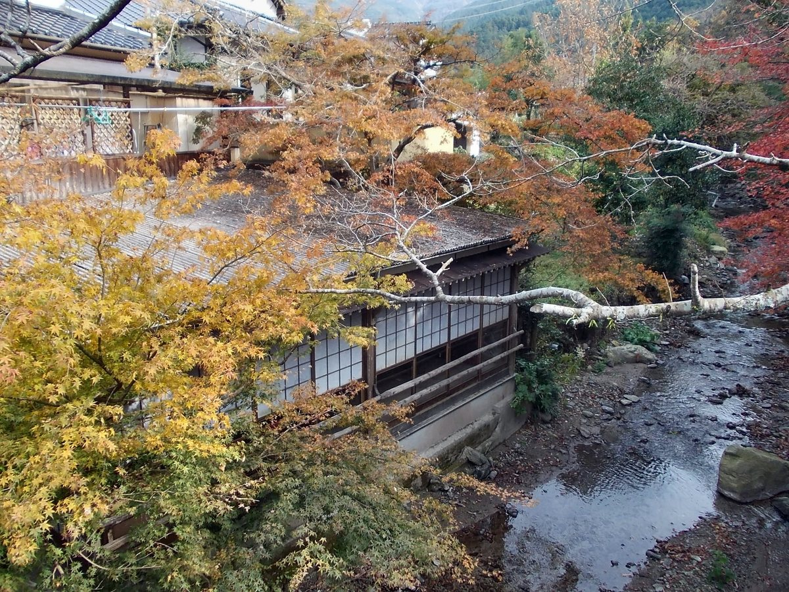
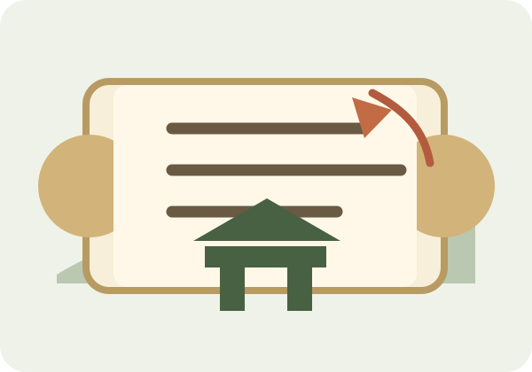
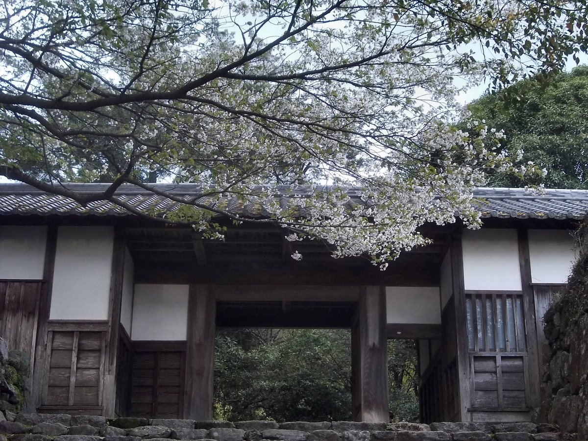

運転
軽自動車向けに、秋月の細道へ入り込まず、秋月駐車場を起点にします。

小倉南区葉山町 → 秋月 / 8:00–16:00
国道322号・八丁峠道路で秋月へ。車は秋月駐車場に置き、目鏡橋、杉の馬場、池田屋の蒸し雑煮、黒門・長屋門、古心寺を徒歩でめぐります。
軽自動車向けに、秋月の細道へ入り込まず、秋月駐車場を起点にします。
本命は池田屋の筑前朝倉蒸し雑煮。11:00入店を狙います。
名所旧跡、城下町、石橋、水路、神社仏閣を中心に構成。
雨・暑さ・混雑・臨時休業時はプランBへ切り替え。
Plan
各カードのチェックはスマホに保存されます。現地では「次に行く場所」と「地図」を押すだけで進めます。
池田屋が営業中で待ちが短い場合はプランA。 火曜・臨時休業・長い行列・雨や猛暑の場合は、博物館や代替ランチを使うプランBに切り替えます。16:00帰着を守るため、14:25を帰路出発の基準時刻にします。
Google Maps
スマホではGoogle Mapsを開き、出発地を「現在地」に差し替えると精度が上がります。
Google Mapsは細い道へ誘導することがあります。秋月では店舗横へ寄せず、秋月駐車場を拠点に徒歩で回る方針にしてください。杉の馬場通りは歩行者専用ではないため、歩行中も車に注意します。
Lunch & Cafe
本命は池田屋。混雑・休業時にすぐ切り替えられるよう、城下町内と周辺の候補を用意しました。

古民家茶屋。蒸し雑煮、川茸料理、葛餅など。黒門周辺の散策と相性がよい候補。
地元食材・鶏料理系。しっかり昼食を取りたい時の候補。水曜定休目安。
庭園喫茶とアジア民芸。ベトナムコーヒーや軽食、骨董散策を組み合わせたい時に。
秋月ドライブの定番寄り道。カレーパンなど。売り切れや営業時間に注意。
渓流沿いの季節感ある立ち寄り候補。悪天候・冬期営業に注意して確認。
History & Nature
現地で読むために、短く要点化しています。気になった項目は「詳しく」を開いてください。





Checklist
写真はWikimedia Commons掲載の画像を、旅行しおり用にリサイズ・一部トリミングして使用しています。詳細はZIP内の LICENSES.md を参照してください。